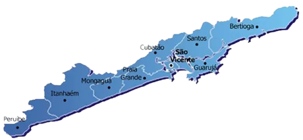

Sobre a Região
Abriga o principal ponto de escoamento da produção brasileira, o Porto de Santos;
Está estrategicamente situada a menos de 100 km da capital São Paulo e das indústrias da região do ABC;
Possui excelentes conexões de transporte viário (Sistema Anchieta - Imigrantes e Rodovia Manuel da Nóbrega).

A Região Metropolitana da Baixada Santista está localizada no litoral paulista sendo sede do Porto de Santos, o maior e mais importante complexo portuário da América do Sul, em torno do qual se desenvolveu a economia regional. É a região paulista que possui o menor número de municípios (nove), ocupando apenas 1% do território estadual, e a segunda maior densidade demográfica do Estado.
CIDADES DA REGIÃO
CLIQUE PARA ACESSAR